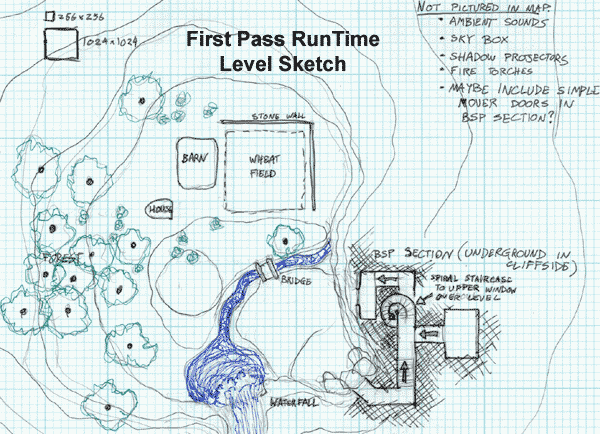
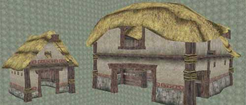

UDN
Search public documentation:
RuntimeMapPreproduction
日本語訳
Interested in the Unreal Engine?
Visit the Unreal Technology site.
Looking for jobs and company info?
Check out the Epic games site.
Questions about support via UDN?
Contact the UDN Staff
Interested in the Unreal Engine?
Visit the Unreal Technology site.
Looking for jobs and company info?
Check out the Epic games site.
Questions about support via UDN?
Contact the UDN Staff
Runtime Map Process

Introduction
No matter what a map is for, be it a game, simulation, or interactive art piece, it should be well thought out to save you from unnecessary headaches down the line. This document talks about what preproduction steps you should take before you start a map using the EM_RunTime map as a reference. To download the Runtime build and map click on the following link: http://udn.epicgames.com/pub/Powered/UnrealEngine2Runtime/Know Your Audience
Who your audience is will dramatically affect the look and design of your map. If you're making a map for the typical gamer, then you will want to make sure that your level has flash and pizzazz and plenty of intricate detail, but it can also have random elements such as floating coins that restore life. For contrast, if your intended audience is comprised of architects, then your level should focus more on realism and how everything would actually fit together in reality. The intended audience for the EM_RunTime map includes people who are looking at the Unreal Engine or just any game engine for the first time. The EM_RunTime map is also intended to be useful for people looking to see how all the different elements of unreal can work together. While the map isn't specifically intended for the typical gamer, it may still be useful for looking at the level to see how the effects demonstrated in the level are put together.Determine Goals
Once the audience is known and you have a general idea of the purpose of your level, you can start laying out a set of goals. Having good solid goals goes a long way to helping you design your level. The goals for the EM_RunTime map were the following:- Show off what can be done with the Unreal Engine
- Make a pretty scene that's not too fantastic
- Keep the total download size relatively low (around 5 MB)
- Include a little bit of everything
Laying it Out on Paper
Now you're ready to start designing. Diving straight into the editor without a laid out plan can often end up taking more time than it saves. It's well worth your time to spend a few minutes laying out where you want everything to go and drawing it roughly to scale. Graph paper divided in powers of 2 blocks is highly recommended for helping figure out how big your level will need to be. Below is the initial sketch with notes for the EM_RunTime map
This sketch was useful in maintaining a consistent scale. Also note that it is somewhat rough and not designed down to the detail. It's important to find the right balance of detail so that you have enough to lay out the level, but not so detailed that designing the map takes as long as building it. A good plan minimizes the amount of stuff you will have to redesign, but know that there will probably be some minor details that will require redesigning along the way.Determining Necessary Art Assets

After your sketch is finished, you can very easily see what art assets you will need. Directly from the map you've drawn you can make a list of the assets you'll need, and then the level designer and the artist can start working in tandem. Here is the list of art assets that were needed at the start of the EM_RunTime map:- Trees
- Farm Buildings
- Stonewall
- Wheat Field
- Bushes
- Fire and Torches
- Waterfall
- Terrain Textures
- Lake and Water Textures
- Entrance Meshes for Underground BSP Space
- Arches for the BSP Area
- Gate Mover
- Light Well with Light Beam
- http://www.google.com using the image search
- http://corbis.com/ a standard for any visual artist
- http://ebay.com/ good for straight on shots taken from many angles